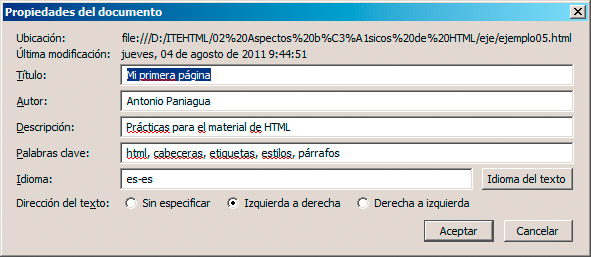

Como recordaremos, cada página web cuenta con un elemento <head> colocado antes del <body>, que no debemos confundir con los elementos de cabecera (<h1>..<h6>) ni con el encabezado <header> que colocamos dentro del <body>.
Esta cabecera general de la página se emplea para incorporar contenidos que no se mostrarán directamente, pero que tienen una elevada influencia en el aspecto que tendrá la página y en su comportamiento.
En su interior podemos añadir algunos de los siguientes elementos HTML:
- <title> y </title>: se emplea para definir el título de la página. Es imprescindible en HTML5, por lo que siempre debemos añadirlo. Este es el título que se mostrará en la barra de título del navegador, al hacer un marcador a la página o en los buscadores de Internet.
- <link />: se utiliza para enlazar con recursos externos, generalmente hojas de estilo. Volveremos sobre ello más adelante.
- <style> y </style>: nos permite definir estilos específicos para la página actual. Se suele emplear en combinación con el anterior, por lo que los trataremos al llegar a las hojas de estilo.
- <base />: define la URL base para el resto de los enlaces que incluyamos en la página web. Se emplea en casos muy concretos.
- <script> y </script>: es otro importante elemento que se utiliza para englobar acciones en otros lenguajes, generalmente Javascript, para conseguir que la página web realice determinadas tareas. Estas son operaciones que se ejecutan al acceder a la página, aumentando su versatilidad.
Actividad 3
Para entender el funcionamiento del elemento script, probaremos a añadir este pequeño código dentro de la página web, entre el <head> y el </head>
<script type="text/javascript">
var d = new Date();
alert ("Hoy es "+
d.toLocaleString() );
</script>
Al escribir esta función, hay que prestar mucha atención a cada paréntesis, punto y coma, etc. Si lo hemos escrito bien, aparecerá un pequeño cuadro indicándonos la fecha actual. Esto sólo funcionará al probar la página en un navegador web, no dentro de BlueGriffon.
- <meta> y </meta>: las etiquetas <meta> no son imprescindibles para el funcionamiento de la página web, pero su inclusión es siempre una buena práctica porque permiten identificar con facilidad algunos parámetros de la web, como autores, codificación de caracteres, etc.
De todas las etiquetas <meta>, debemos incluir al menos una que defina qué tipo de codificación de caracteres estamos empleando. Teniendo en cuenta que nuestra web puede ser vista en cualquier lugar del mundo, la codificación de caracteres se encargará de que un ciudadano japonés, por ejemplo, pueda ver correctamente nuestra página y no una serie de caracteres ininteligibles. Hoy en día emplearemos siempre la codificación UTF-8.
Normalmente la expresaremos de esta forma:
<meta http-equiv="content-type" content="text/html; charset=UTF-8">
Como se puede observar, las etiquetas meta suelen incorporar dos parámetros, el tipo de etiqueta (que suele ser name) y el contenido (con el parámetro content).
Veamos algunos ejemplos más:
<meta content="Antonio Paniagua" name="author">
<meta content="Prácticas para el material de HTML" name="description">
<meta content="html, cabeceras, etiquetas, estilos, párrafos" name="keywords">
Los valores se describen por sí solos. Keywords significa palabras clave, es decir, términos que describen el contenido de nuestra página. Aún hay algunos valores más para name, pero con los indicados nuestra página estará suficientemente descrita para que sea localizada con facilidad en Internet.
Cabeceras sencillas
Todo lo anterior irá cobrando sentido poco a poco. No es necesario que nos preocupemos en exceso de tener una cabecera de página completamente rellena, aunque sí es apropiado en el caso de los elementos <meta>. Para ello, los editores de páginas web suelen contar con una opción que se encargará de hacer el trabajo más tedioso.
En BlueGriffon seleccionaremos la opción Formato>Propiedades de página (debemos estar en el modo wysiwyg para que esté activa) y en el cuadro de diálogo que se despliega, podremos editar las principales etiquetas meta, así como el idioma en el que está creada la página web.

Si revisamos el código de la página, veremos cómo se han incorporado todas las etiquetas necesarias.
Pregunta Verdadero-Falso
Verdadero Falso